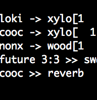

ixi lang - version 3
View screenshot | View demo videos | Description
|
||||||
Description
The ixi lang v3 live coding environment is an extremely simple and visual system, presenting a high entry level control over synth definitions and samples in SuperCollider. The core idea is to represent events in a spatial layout, thus merging musical code and musical scores. The score is active, i.e., if a method is performed upon the score, it changes in real time.
Find screen grabs of ixi lang here
ixi lang is a free sofware with a GPL license